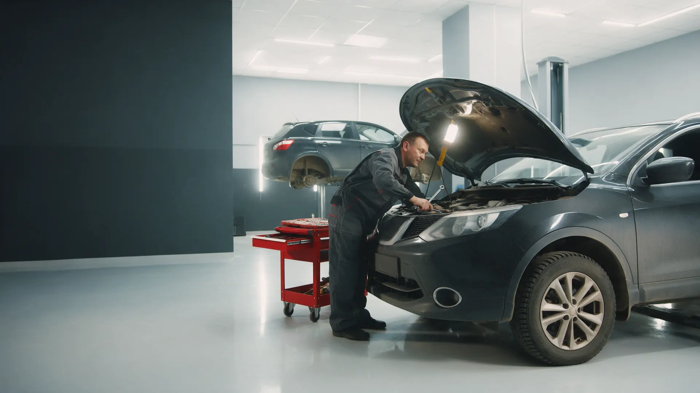
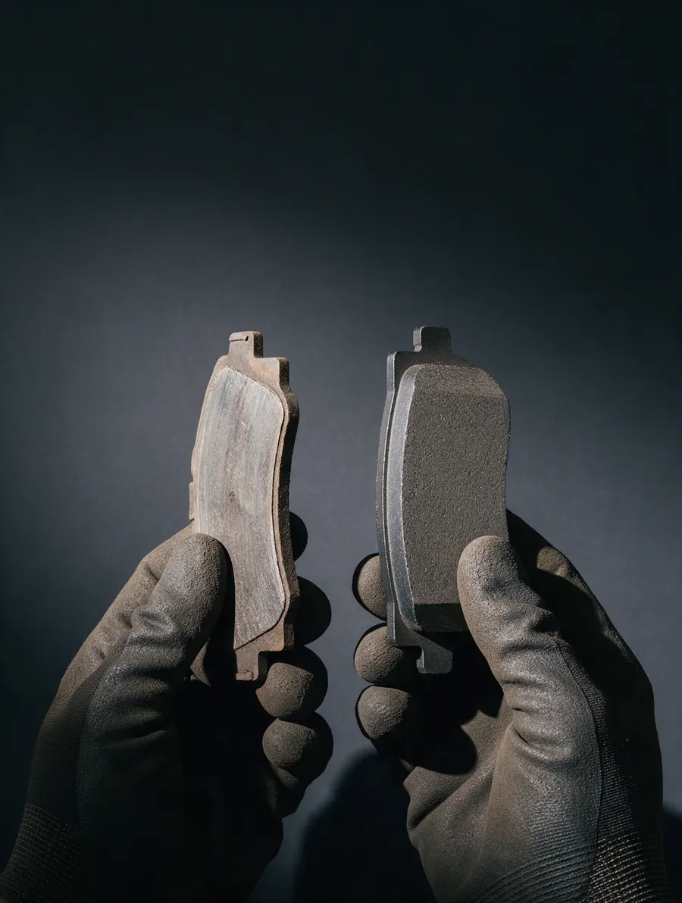
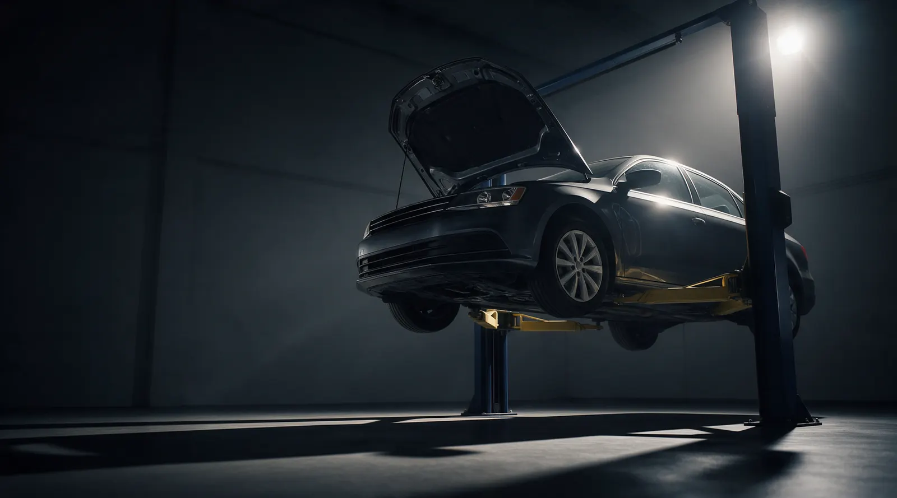
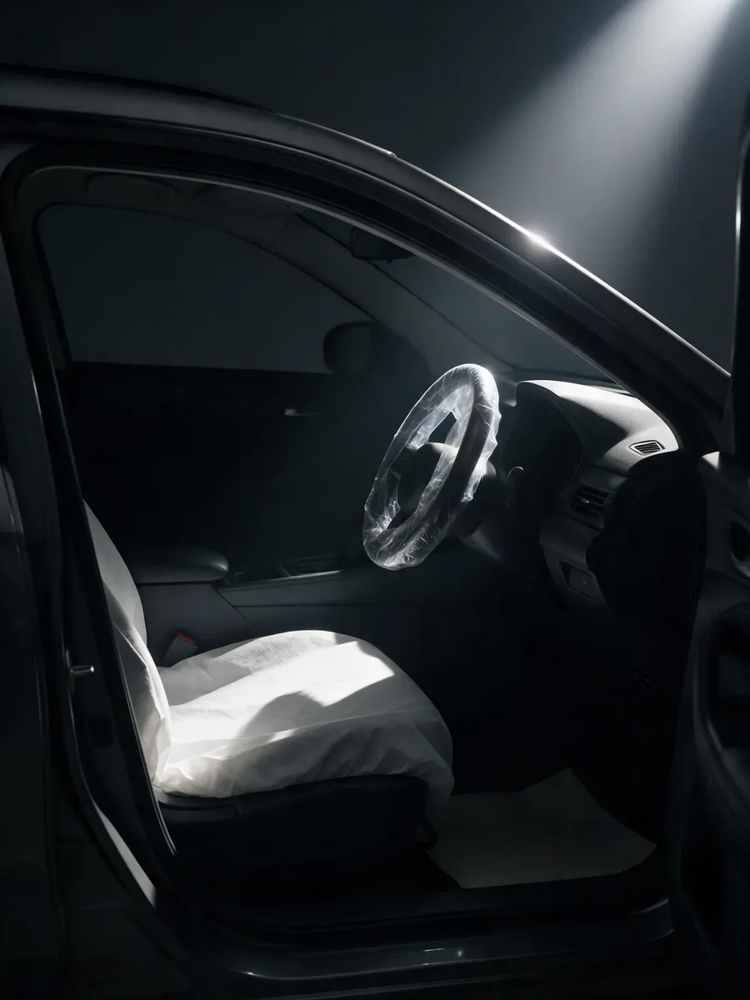

Двигатель, электрика, шиномонтаж
Автосервис в Кандалакше: двигатель, электрика и шиномонтаж
Запись на конкретное время и понятный список работ: что делаем, сколько стоит и когда машина будет готова.
- Ремонт двигателей и электрики
- Шиномонтаж и балансировка колёс
- Пн–Сб с 10:00 до 18:00, Локомотивная, 18

Что входит в визит
Входит
- Осмотр и понятный список работ до начала ремонта
- Название работ и цена – до вашего «да»
- Звонок, если по ходу всплыло что-то ещё
Отдельно, если нужно
- Запчасти и материалы – оригинал или аналог на ваш выбор
- Нетиповые работы – оценка на диагностике
- Работы, которых вы не заказывали
Цены на типовые работы
Стоимость работ без запчастей и материалов. Точную сумму называем при записи по марке и году.
Шиномонтаж
- Балансировка колёсесли бьёт руль на трассеуточнить
- Ремонт прокола шиныосмотр и заделкауточнить
Ремонт
- Диагностика и ремонт электрикикогда не заводится или горят лампыуточнить
- Ремонт двигателяоценка после диагностикиуточнить
Нетиповую работу оцениваем на диагностике и делаем только с вашего согласия.
Четыре шага, и на каждом – ваше «да»
- 01
Записались на время
Выбираете день и время, пишете марку, год и что беспокоит.
- 02
Говорим, берёмся ли
Сразу скажем, делаем ли вашу работу, и во сколько она обойдётся.
- 03
Делаем ровно заказанное
Всплыло что-то ещё – звоним и спрашиваем.
- 04
Выдача машины
Объясняем, что сделали, и отдаём старые детали.



Чего не делаем без согласования
Не меняем то, чего вы не заказывали
Нашли что-то ещё – звоним, показываем, ждём вашего «да».
Не берём работу молча
Если ваша работа нам не по силам, скажем об этом сразу, а не после визита.
Не называем цену «на глаз»
Сумму знаете до начала работ.
Отзывы с Яндекс.Карт
«Была проблема в электрике, не запускался автомобиль. Сделали все качественно! Провода аккуратно сложили, по цене не обидели, в общем отличный сервис! Рекомендую!»
Vlad K. · 17 августа 2023
«Самый адекватный и профессиональный механик в городе, пользуюсь услугами около 5 лет, цену не гнут, дают грамотные советы, весьма рекомендую»
Алексей Ермаков · 20 ноября 2022
«Нужна была срочная балансировка колёс - было биение руля на трассе. Все сделали без предварительной записи, качественно и по цене приемлемо.»
Сергей Мурин · 20 июля 2019
Отзывы с карточки на Яндекс.Картах, без правок.
Частые вопросы
Делаете ли вы ремонт прокола и балансировку?
Да, шиномонтаж – одна из наших услуг. Нетипичный случай уточним по телефону до приезда.
Нужна ли запись заранее?
Лучше записаться на удобное время, но срочную балансировку клиенты делали и без записи, как пишут в отзывах.
Можно ли выбрать запчасти самому?
Да: оригинал или аналог – решаете вы, цену знаете до установки.
Запишитесь на удобное время
- Адрес
- Локомотивная ул., 18, Кандалакша
- Часы
- Пн–Сб 10:00–18:00, Вс выходной
- Телефон
- +7 (921) 270-91-93